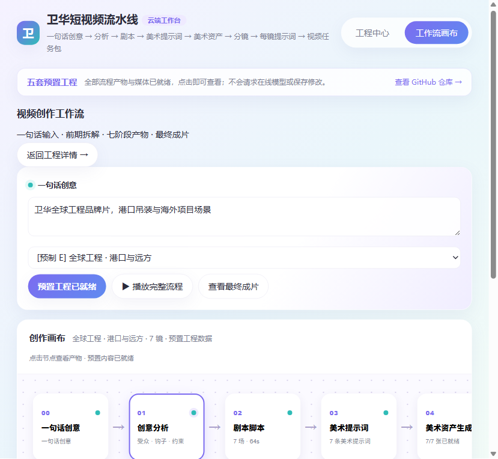
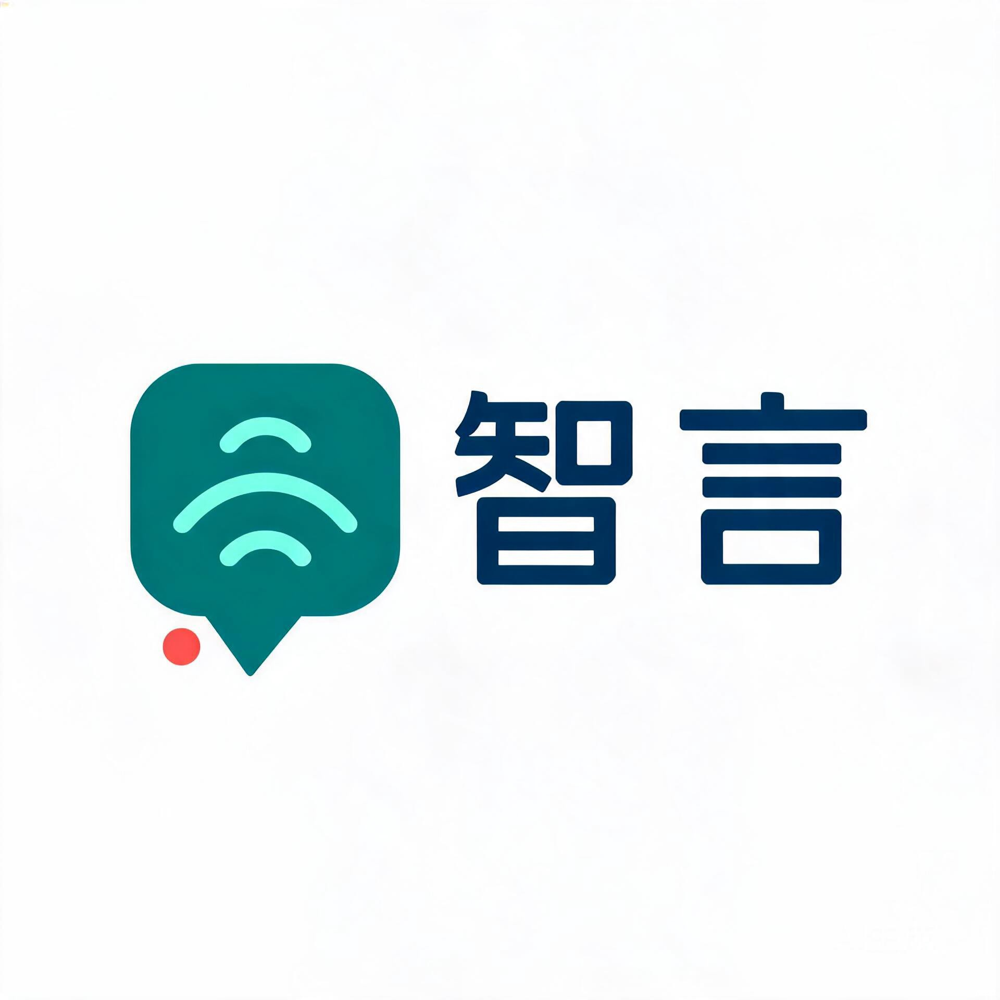
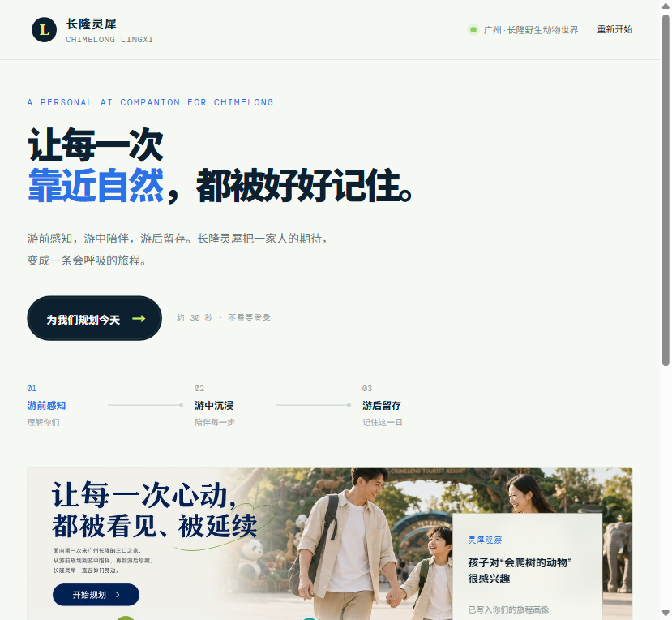
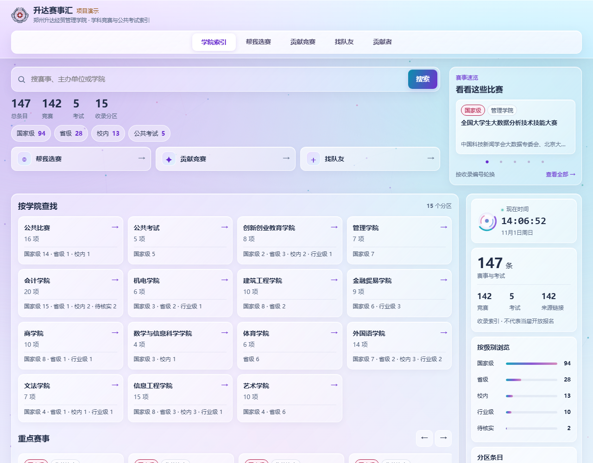

卫华短视频流水线
AI“熊家”团队在 AI 入企黑客松·卫华集团专场完成的内容创作作品。系统把一句话创意拆解为剧本、美术、分镜、逐镜视频和最终成片，形成完整的工业短视频生产工作流，获活动方内容创作赛道三等奖。
- 团队提交作品：《一键出图》《MG500 千钧之托》《匠能集》《卫华短视频流水线》。
- 项目角色：团队组织、工作流设计、内容表达与演示。
- 查看公开演示
- 查看 GitHub 项目
- 查看活动官网
郑州升达经贸管理学院外国语学院翻译专业 2024 级本科生。持续实践 C/C++、Qt、前端、AI 应用与 AIGC 创作，让技术既有功能，也有清晰的表达。
我是王佳琦，也用“竹心”和 YGtemple 作为创作与开发身份。
我的实践路径从翻译专业出发，逐步延伸到程序设计竞赛、Qt 桌面应用、前端页面、AI 智能体、AIGC 影像和开源工具。语言专业的训练让我更重视信息组织、提示词表达、技术文档阅读和作品叙事；项目实践则让我把这些能力转化为可交互、可展示、可复用的产品。
目前，我的主要方向包括：
从 AI 应用到内容生产，从网页工具到学习游戏。

“熊家”团队在 AI 入企黑客松·卫华集团专场完成的内容创作作品。系统把一句话创意拆解为剧本、美术、分镜、逐镜视频和最终成片，形成完整的工业短视频生产工作流，获活动方内容创作赛道三等奖。
面向英语写作学习与训练的 AI 应用，包含 Web 端和 Qt 桌面端实践。项目结合写作知识组织、智能体工作流、题目训练与作品展示，获得校内智能体创新应用大赛三等奖和最受欢迎奖。


从剧本构思、视觉表达、分镜设计到 AI 影像生成完成的短片作品，获 WaytoAGI 全国 AI 切磋大会郑州站优秀作品奖和在地最受欢迎奖。

面向校园赛事信息聚合、报名管理与团队协作的系统设计。本人担任项目申报负责人，指导教师为程珍，项目计划覆盖赛事信息、团队匹配、进度管理和数据展示。
面向多平台资料调研、长文写作与公众号 HTML 排版的创作工作流，将选题、资料组织、文章结构、写作和排版串成可复用的 Skill。
2026 年 11 月 10—11 日，我参加了圆方智谷与卫华集团举办的“AI 入企黑客松·卫华集团专场”。活动在河南长垣卫华集团厂区举行，参赛团队围绕真实企业场景，在两天一夜内完成创意、开发、内容生产和路演。
我们的团队名为“熊家”，成员包括王佳琦、罗景祺、许煜堃、姚兆晗、张少刚、周明月。团队围绕工业内容表达完成四件作品，其中 No.88《卫华短视频流水线》获得内容创作赛道三等奖。
这次经历让我进一步练习了如何把企业需求转化为作品结构，如何在短时间内组织团队分工，以及如何用清晰的演示让评委理解一套完整的 AI 工作流。
程序设计、AI 创新、AIGC 创作与志愿服务。
省赛银奖，指导教师梁旭阳
国赛优秀奖，指导教师赵晨言
银奖，指导教师梁旭阳
银奖
三等奖
校内智能体创新应用大赛三等奖、最受欢迎奖
中源设计奖
人气作品奖
Top2000、先锋探索者
完成报名并提交作品方案
优秀作品奖、在地最受欢迎奖
内容创作赛道三等奖，团队奖金 2000 元
2026 年 4 月获“国家安全知识达人”称号。
获河南省翻译协会志愿服务荣誉证书，参与郑州市企业出海服务平台启动仪式暨企业出海赋能系列活动志愿服务。
全国计算机二级 C 语言、英语四级、普通话二甲。
从第一行 C++ 代码，到完整的 AI 产品与内容工作流。
开始系统学习 C/C++，同时持续了解 AI、大模型和 AIGC 工具
进入郑州升达经贸管理学院外国语学院翻译专业学习
开始学习 Qt，从界面控件、信号槽和定时器逐步进入桌面应用开发
完成翻译课程报告、课堂展示和人工智能与翻译相关课程作品
开始学习 HTML、CSS、JavaScript 和响应式页面设计
获“国家安全知识达人”称号
参加码蹄杯、百度之星，完成融研智笔并参加校内智能体比赛
参加中源黑客松、TRAE 和 AI 先锋活动，码蹄杯获国赛优秀奖
参与企业出海活动志愿服务，《醒春》获 WaytoAGI 郑州站双奖
申报赛脉项目，参加卫华集团专场黑客松并获内容创作赛道三等奖
把技术、内容与展示组织成可交付的作品。
C、C++、STL、数据结构、搜索、贪心、枚举、调试与排错
Qt、QWidget、QMainWindow、信号槽、QTimer、网络请求与本地配置
HTML、CSS、JavaScript、响应式布局、信息结构与作品展示页
HiAgent、API 封装、OCR 接入、智能体工作流、提示词设计
ComfyUI、图像工作流、剧本、分镜、配音、AI 视频与提示词工程
英语写作、技术文档阅读、长文写作、项目讲解、答辩与路演
常用工具包括 Visual Studio 2022、Qt、TRAE、Codex、Claude Code、豆包、ComfyUI，以及多种大模型和内容生产平台。